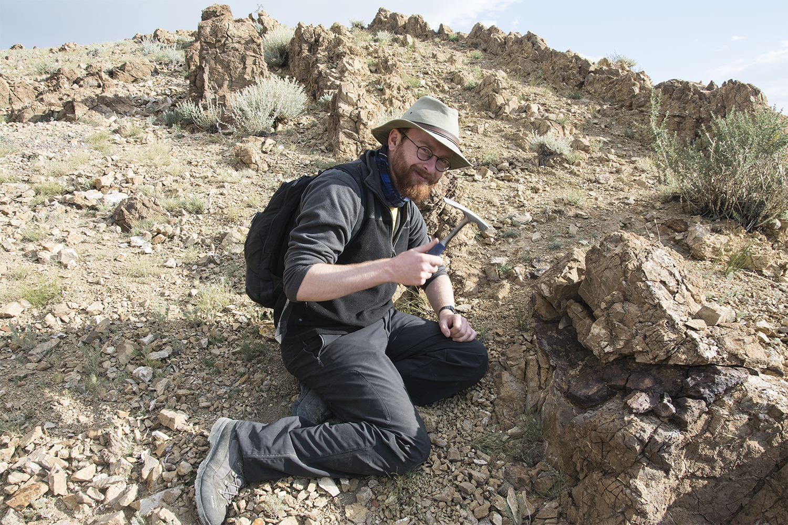

Home
Research
Publications
CV
Blog
GitHub

Publications
Dearden R.
Fossil focus: Acanthodians.
Palaeontology online
Volume 5, Article 10,1-12
doi:10.7287/peerj.preprints.1950v1
Key words: Acanthodians, Chondrichthyans
.